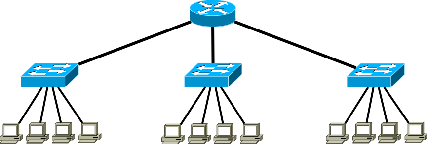

Baum-Topologie

Von Boettcher Deniz und Jordan Alexander
Gliederung
- Was ist eine Baum-Topologie
- Vergleich zur Stern-Topologie
- Vor und Nachteile
- Fazit
Was ist eine Baum-Topologie
- Besteht aus einer Wurzel und Ästen
- Wird bei großen Gebäuden verwendet
- Datentransfer über übergeordnete Rechner
Vergelich zu Stern-Topologie
- Bei Astausfall, ausfall von allen blättern
- Teilt sich auf
- größere Reichweite
Vorteile
- Keine Datenkollision
- Netzerweiterung problemlos möglich
- höhere Ausfallsicherheit
Nachteile
- Netzausfall bei ausfall des Switches
- Aufwändige Verkabelung
- begrenzte Leitungslänge